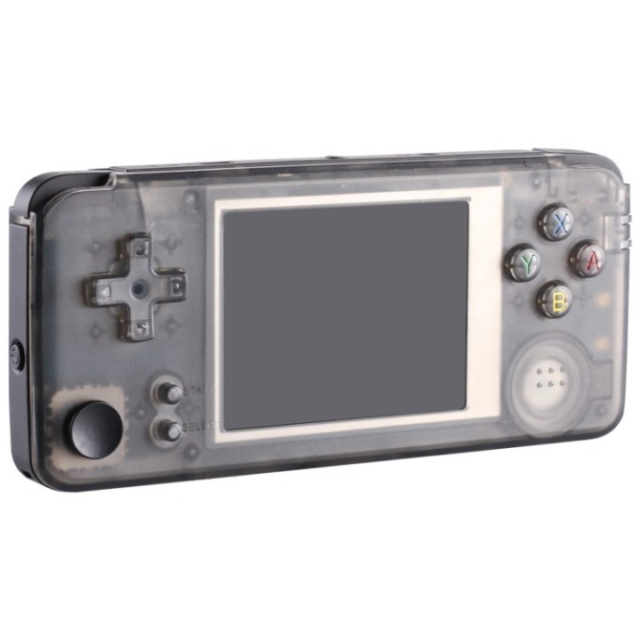

Product
An ergonomic console to play all your favorite retro games on the go!
About
This project is from a group of 6 students from Instituto Superior Técnico (IST). They were challenged to do a project and decided to do one on a portable game console based on MiSTer FPGA for the curricular unit "Integrated Project in Electronics Engineering". The project is funded entirely by IST.
Planning
We are currently on Phase 1 of the project!
Blog
This is our latest post on the blog:
Temperature measurements and PSX and NES cores update (29/02/2024):
The team measured the FPGA running at 45ºC after about half an hour of PSX gameplay,
the core that is probably most demanding.
We will do further testing in a closed box,
but the temps seem probably fine and just an heat sink on the FPGA's processor
should do the work.
The PSX core is now working! We had to load a
PSX BIOS
to make it work but it is now working fine!
About the NES core, we discovered it had something to do with how the original games and consoles were made.
It seems like the NES core for the MiSTer project was made using USA standards,
that is, based on USA outlet frequencies.
Because of this, only USA ROMs for games should work with the NES core,
making other ROMs from Japan or Europe run differently from intended.